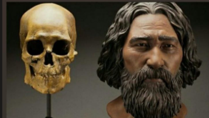

Columbia River GIS · Kennewick, WA
3D aerial view with real elevation. Click any gold star for site summaries with APA references. The Ancient One was found on the banks of the Columbia River.
Select Site Node
RegionClick a star on the map. The primary node is the discovery site at Columbia Park, Kennewick, WA.
Discovery · Who, What, Where, When, How
The 1996 discovery of the Ancient One on the Columbia River.
The Find
Who: Two college students, Will Thomas and Dave Deacy, were sneaking into hydroplane races along the Columbia River near Kennewick, Washington, when they noticed a human skull in the mud.
What: A nearly complete skeleton — one of the oldest and most complete ever found in North America, comprising more than 380 bones and bone fragments.
Where: The shallows of the Columbia River, near Kennewick, Washington, on land managed by the US Army Corps of Engineers (Columbia Park).
When: Discovered on July 28, 1996. Radiocarbon dating placed the skeleton at approximately 8,500 years old (8,340–9,200 calibrated years BP).
How: The initial find was treated as a possible murder. A local forensic anthropologist, James Chatters, recovered the skeleton and discovered a stone spearpoint (Cascade point) embedded in the hip. Radiocarbon dating revealed its great antiquity, sparking a legal and cultural firestorm.
Radiocarbon Dating
Radiocarbon dating of a bone sample was performed at the University of California, Riverside. The results placed the skeleton at 8,340–9,200 calibrated years before present, making it one of the oldest and most complete skeletons in the Americas.
Taylor, R. E., Kirner, D. L., Southon, J. R., & Chatters, J. C. (1998). Radiocarbon dating of the Kennewick skeleton. Current Research in the Pleistocene, 15, 131–133.
Chatters, J. C. (2001). Ancient encounters: Kennewick Man and the first Americans. Simon & Schuster.
Forensic Reconstruction · Artist's Interpretation
StudioEIS reconstruction of the Ancient One's face, based on forensic analysis of the skull.

→ Save your image as
aa.png
Please note: This reconstruction is an artist's interpretation based on forensic analysis of the skull — it is not a photograph and it is not the Ancient One's actual face. Some tribal members do not accept any reconstruction, out of respect for the Ancestor's reburial in 2017. This image is presented for educational purposes only.
About the Reconstruction
The reconstruction was created using CT scans and osteological measurements of the Ancient One's skull. Soft tissue depth data from modern reference populations were applied to estimate the shape of the face.
The sculpture stands about 5'8" tall (1.73 m) — the estimated height of the Ancient One based on femur length. He weighed approximately 70–75 kg.
Owsley, D. W., & Jantz, R. L. (2014). Kennewick Man: The scientific investigation of an ancient American skeleton. Texas A&M University Press.
Smithsonian Institution. (2014). Kennewick Man: The scientific investigation. National Museum of Natural History.
3D Osteological Diagram · The Ancient One
Interactive 3D anatomical plate. Click any bone to learn about the Ancient One's life, injuries, and resilience.
Select a Bone
InteractiveClick on any bone in the 3D holographic diagram to learn about the Ancient One's life, injuries, and story.
DNA & Origin · Genome Reveals Truth
3D molecular models and genome analysis of the Ancient One.
—
—Religion & Culture · Sacred & Sovereign
Sacred objects, reburial, oral history, and the spiritual relationship to the Ancient One.
—
—Significance · History, Law, Legacy
The legal battle, media attention, and enduring legacy of the Ancient One.
Legal Timeline
- 1996: Discovery. Tribes claim him under NAGPRA (Native American Graves Protection and Repatriation Act).
- 1996–2004: Eight scientists sue the government for the right to study the remains. Courts rule NAGPRA does not apply because "cultural affiliation" was not established.
- 2005–2006: Scientists study the bones at the Burke Museum.
- 2015: Genome sequencing proves Native American ancestry.
- 2016: US government determines the Ancient One is Native American; repatriation begins.
- 2017: Reburial by the five claimant tribes.
"The reason we can come to these conclusions is because the skeleton was kept for science... But the conclusions show that he was Native American in the first place." — Eske Willerslev
Media & Public Attention
The discovery of the Ancient One drew international media attention. Documentaries, news articles, and social media discussions have explored the tension between scientific research and Indigenous sovereignty. The case became a landmark in the movement for repatriation of ancestral remains.
Key Figures
- Will Thomas & Dave Deacy — Discoverers (1996)
- James Chatters — Forensic anthropologist who first examined the skeleton
- Dr. Douglas Owsley — Smithsonian bioarchaeologist who led the scientific study
- Dr. Eske Willerslev — Geneticist who sequenced the genome (2015)
- Five Claimant Tribes — Colville, Nez Perce, Umatilla, Yakama, Wanapum
Bureau of Indian Affairs. (2000). Interior Department determines "Kennewick Man" remains to go to five Indian tribes. U.S. Department of the Interior.
Burke Museum. (n.d.). Kennewick Man: The scientific investigation. University of Washington.
Native American Graves Protection and Repatriation Act (NAGPRA), 25 U.S.C. § 3001 (1990).
Owsley, D. W., & Jantz, R. L. (2014). Kennewick Man: The scientific investigation of an ancient American skeleton. Texas A&M University Press.
Rasmussen, M., et al. (2015). The ancestry and affiliations of Kennewick Man. Nature, 523(7561), 455–458.